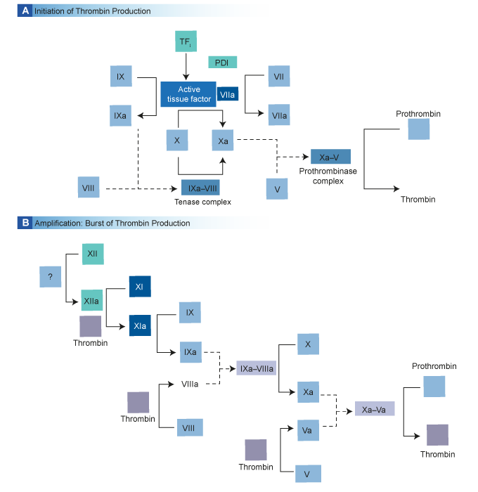
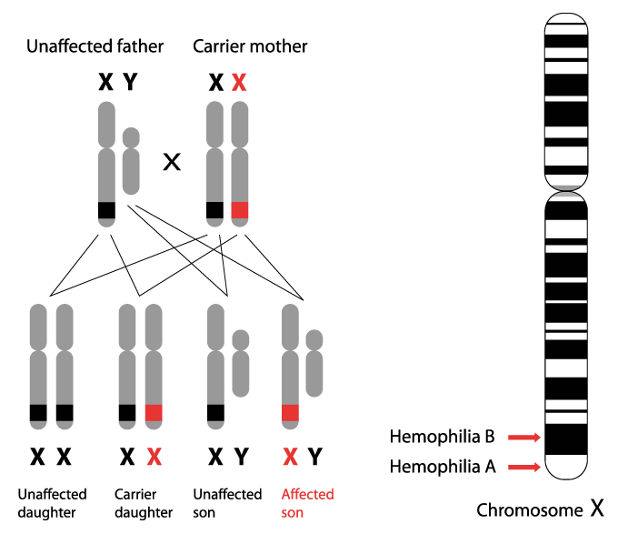

GENERALIDADES DE LA HEMOFILIA1,2,3
La hemofilia es un trastorno genético ligado al cromosoma X que afecta la sangre, la cual se caracteriza por sangrados en las articulaciones, en grupos musculares y las cavidades corporales (abdomen, bóveda craneana), los cuales se presentan posteriores a traumatismos, intervenciones quirúrgicas y en algunos casos de manera espontanea, dicha presentación clínica depende directamente del grado de deficiencia en las concentraciones de los factores de la coagulación involucrados.
Aunque existen diferentes tipos de hemofilia, los más frecuentes en este tipo de trastornos de sangrados crónicos y hereditarios son los relacionados con la deficiencia congénita de los factores de la coagulación VIII y IX (hemofilia tipo A y hemofilia tipo B, respectivamente). Estas deficiencias ocurren como resultados de mutaciones genéticas de los respectivos genes que codifican para los factores de la coagulación antes mencionados.
Los factores VIII y IX son componentes importantes en el proceso intrínseco de la coagulación, necesarios para la producción de trombina y en la formación del coagulo de fibrina. Ver figura 1.
Figura 1. Cascada de la coagulación, pasos donde intervienen los Factores VIII y IX 3
Como la hemofilia es un trastorno de la coagulación ligado al cromosoma X, se expresa por lo general en los varones, y las mujeres son portadoras; el varón hereda el gen mutante de la madre (quien es la portadora), pero se debe tener en cuenta que aproximadamente un 30% de los casos ocurren por mutaciones espontaneas, sin que exista un antecedente familiar de hemofilia. Ver figura 2. Sin embargo, aunque como se ha hecho mención, la hemofilia es una enfermedad recesiva ligada al cromosoma X, las mujeres aunque portadoras, pueden en ciertos casos manifestar la enfermedad:
- Lionización extrema (inactivación del alelo del factor IX normal en uno de los cromosomas X)
- Homozigocidad en el gen de la hemofilia (padre hemofílico y madre portadora, dos mutaciones independientes, o combinación de herencia y nuevas mutaciones)
- Síndrome de Turner (X0)
Figura 2. Como se hereda la hemofilia
Dato Histórico 4
La naturaleza hereditaria y ligada al sexo de esta enfermedad ha sido documentada aun desde tiempos ancestrales, siendo los casos más distintivos los relacionados con las casas reales de Europa, en donde, la historia de la reina Victoria de Inglaterra es la más representativa; tuvo nueve hijos, de los cuales, uno de ellos, Leopoldo, heredo la hemofilia, y dos de sus hijas hijas, Alicia y Beatriz, quienes eran portadoras, fueron las responsables de transmitir la enfermedad a las casas reales de Rusia, Prusia y de España.
Incidencia y Prevalencia1,5
La hemofilia es el trastorno sanguíneo más severo que se presenta en los seres humanos; la prevalencia es mundial, sin que exista un patrón geográfico a parte de las zonas donde se han propagado mutaciones. Aunque en los países en vía de desarrollo no existen datos fiables dadas las dificultades en cuanto a centros de referencia y métodos de diagnóstico, se puede asumir tomando como base la experiencia de los países desarrollados, que la prevalencia de la hemofilia A es de uno por cada 10.000 hombres y de la hemofilia tipo B de uno por cada 50.000 hombres, en otras palabras, la hemofilia A es mucho más frecuente que la tipo B, representando cerca del 85% de los casos de este trastorno de la sangre. En el mundo, la incidencia de hemofilia A es de un caso por cada 5000 individuos masculinos; con una prevalencia entre 5.4 a 14.5 casos por cada 100,000 individuos masculinos; en el caso de la hemofilia B, la incidencia se ha estimado en aproximadamente un caso por cada 25.000 a 30.000 nacidos vivos de sexo masculino, con una prevalencia de 5.3 casos por cada 100.000 nacidos vivos de sexo masculino.
De acuerdo a la literatura, la incidencia de hemofilia en la población mundial viene creciendo en aproximadamente un 2% anual.